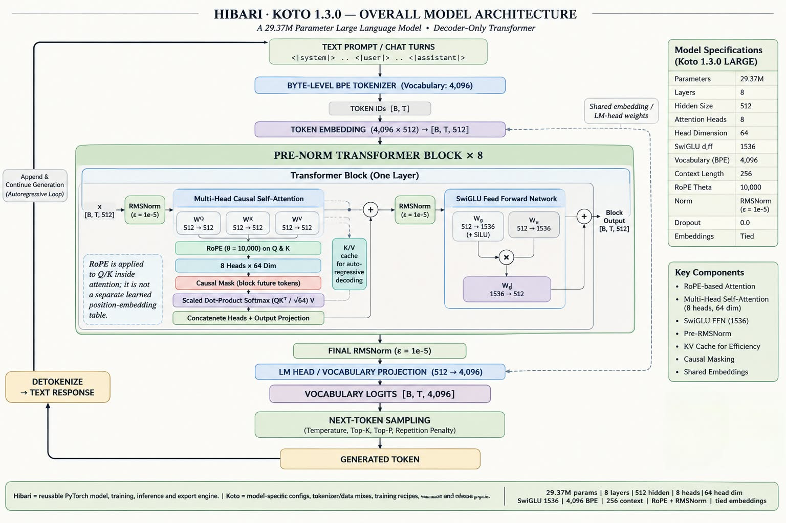
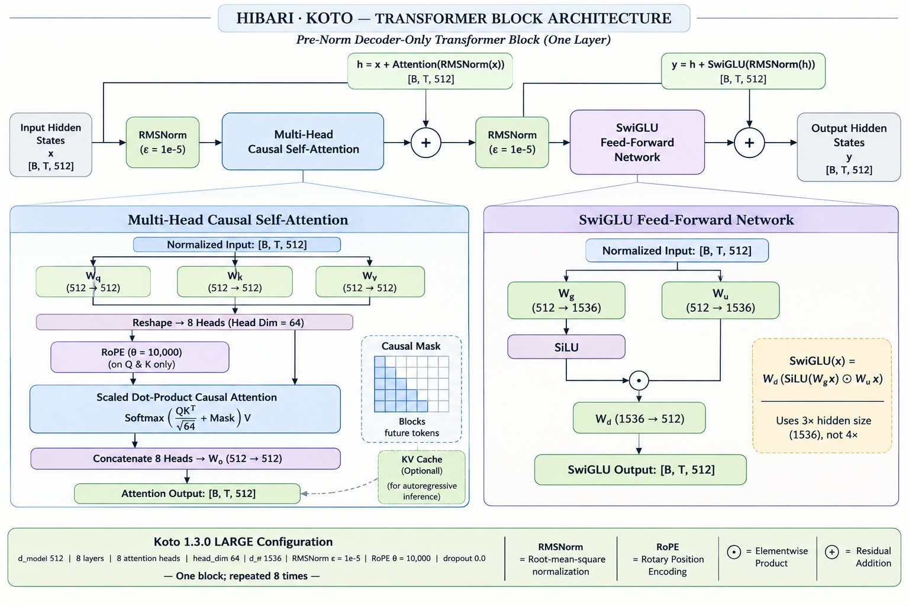
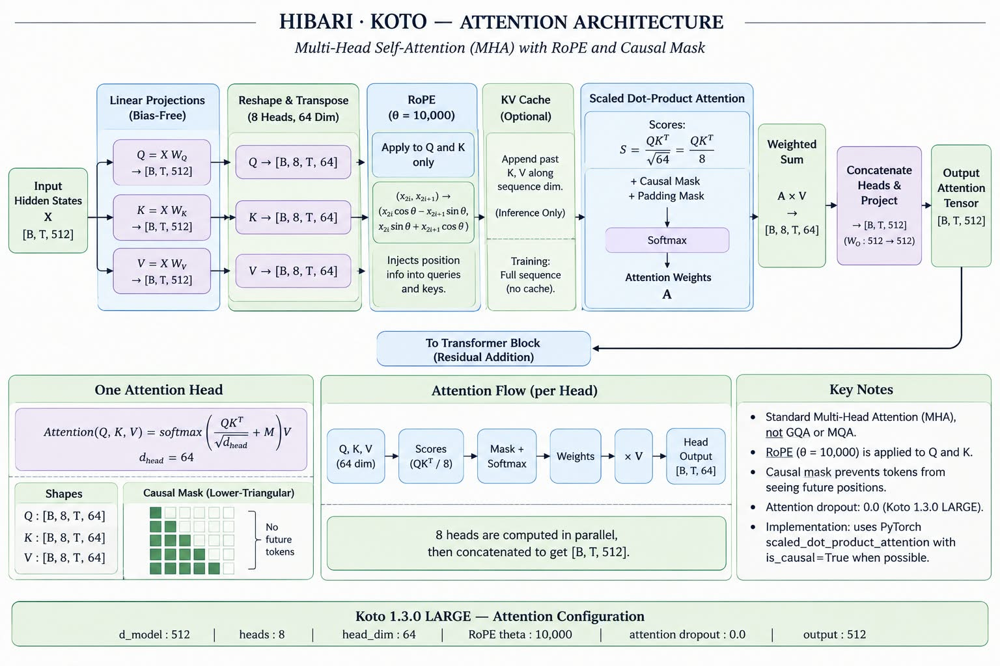
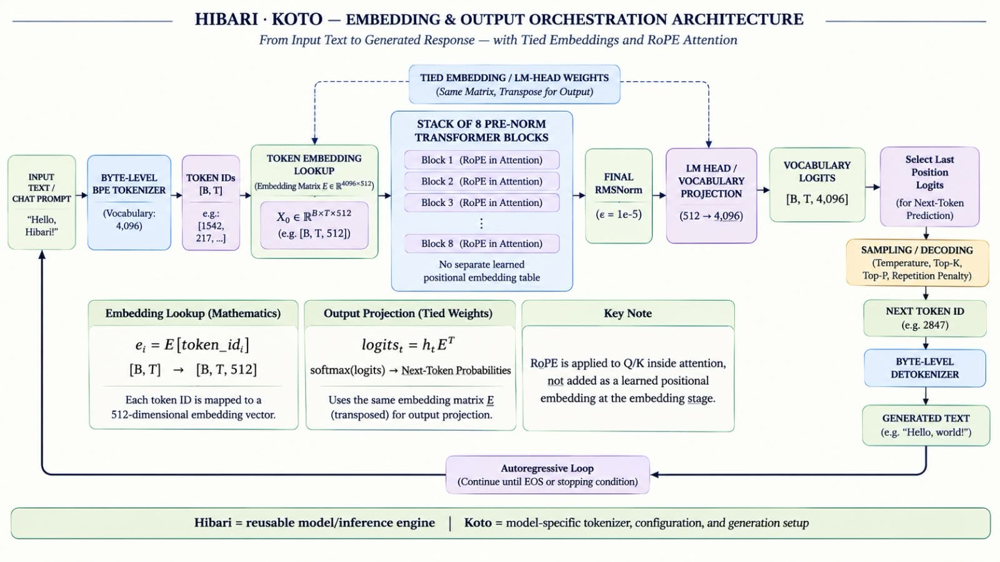

Architecture
A LLaMA-style decoder written from first principles
These diagrams show Koto 1.3.1 exactly as it is implemented in src/hibari/model/. The same code builds any size; Koto 1.1.x is the same structure at 6.2M parameters.
Specification
Koto 1.3.1 vs 1.1.x| Koto 1.3.1 (current) | Koto 1.1.x | |
|---|---|---|
| Type | Decoder-only causal Transformer (LLaMA-style) | same |
| Parameters | 29,368,832 | 6,163,712 |
| Blocks × width | 8 × 512 | 6 × 256 |
| Attention | 8 heads × 64, full multi-head, no biases | 8 heads × 32 |
| Feed-forward | SwiGLU, d_ff 1536 | SwiGLU, d_ff 768 |
| Normalisation | pre-RMSNorm, ε = 1e-5 | same |
| Positions | RoPE, θ = 10,000, adjacent-pair rotation | same |
| Regularisation | residual dropout 0.1 | none |
| Context | 256 tokens | same |
| Vocabulary | 4,096 byte-level BPE tokens, 7 chat specials | same |
| Output head | tied to the token embedding | same |
1 · End to end
Overall architecture
<|system|>, <|user|>, <|assistant|>, end of turn <|eos|>), tokenised, embedded, passed through 8 blocks and a final RMSNorm, and projected to 4,096 logits. A token is sampled and fed back with the KV cache, so the prompt is processed once. The diagrams were drawn for the 29.4M architecture shared by 1.3.0 and 1.3.1; 1.3.1 additionally uses residual dropout 0.1 during training (the diagram's “Dropout 0.0” is the attention dropout, unchanged).2 · One Transformer block
Pre-norm residual block
Each block normalises before each sub-layer and adds the result back to the residual stream. Pre-norm keeps training stable without warm-up tricks.
SwiGLU: down(silu(gate(x)) · up(x)), three bias-free projections with hidden size 1536.
Residual dropout (new in engine 0.4.1) drops 10% of each sub-layer output during training only; it adds no parameters, so checkpoints and GGUFs are unaffected.
3 · Attention
Multi-head causal self-attention
RoPE rotates adjacent pairs of each query and key by a position-dependent angle (θ = 10,000), so attention depends on relative position. This is exactly llama.cpp's ROPE_TYPE_NORM, so the weights are exported unpermuted.
KV cache: during generation each new token attends to the cached keys and values; tests check that this equals re-running the full sequence.
Causality is tested directly: changing token j never changes the logits before j.
4 · Embedding and output
Tied weights
The 4,096 × 512 embedding matrix is used twice: to look tokens up and, transposed, to score the next token. Tying saves 2.1M parameters and the GGUF omits output.weight.
Tokenizer: byte-level BPE trained for Koto, with 7 special tokens. Text a user types that looks like a special token (<|assistant|>) is escaped, so a user cannot forge turns.
5 · The application layer
Python engine only| # | Stage | What it does |
|---|---|---|
| 1 | Safety layer | Self-harm, violent intent and harmful-instruction requests get a fixed, reviewed response; the model is not called. |
| 2 | Task router | Rewriting requests (rephrase, correct grammar, formal, casual, polite, shorten, simplify) are sent in the exact form used in training. |
| 3 | Normalisation | Chat shorthand (u, r, wat, thx) is expanded for the model only; safety and routing see the original text. |
| 4 | Candidates + critic | Several replies are sampled in one batched pass; a transparent critic ranks them (fluency, relevance, named appropriateness rules). It never writes text. |
| 5 | Cleaning | Chat markers removed, emojis capped, an unfinished last sentence trimmed. Nothing is added. |
These stages live in the Python engine. A GGUF run in llama.cpp or Ollama returns the raw model's reply without them.
6 · GGUF export and parity
llama.cpp + Ollama| Variant | Size | Same greedy reply as PyTorch (11 prompts) |
|---|---|---|
| F32 | 112.2 MiB | 11/11 |
| F16 | 56.2 MiB | 11/11 |
| Q8_0 | 29.9 MiB | 11/11 |
| Q4_K_M | 17.5 MiB | 9/11 |
The exporter writes the llama GGUF architecture with the full tokenizer and chat template, plus hibari.* provenance metadata (model and weights version, checkpoint and tokenizer SHA-256). A NumPy reference runtime that reads only the GGUF reproduces the PyTorch logits.